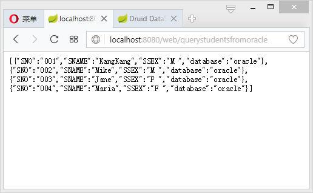

JdbcTemplate配置Druid多数据源的核心在于创建JdbcTemplate时候为其分配不同的数据源，然后在需要访问不同数据库的时候使用对应的JdbcTemplate即可。这里介绍在Spring Boot中基于Oracle和Mysql配置Druid多数据源。
引入依赖
先根据https://mrbird.cc/%E5%BC%80%E5%90%AFSpring-Boot.html开启一个最简单的Spring Boot应用，然后引入如下依赖：
多数据源配置
接着在Spring Boot配置文件application.yml中配置多数据源：
然后创建一个多数据源配置类，根据application.yml分别配置一个Mysql和Oracle的数据源，并且将这两个数据源注入到两个不同的JdbcTemplate中：
上述代码根据application.yml创建了mysqldatasource和oracledatasource数据源，其中mysqldatasource用@Primary标注为主数据源，接着根据这两个数据源创建了mysqlJdbcTemplate和oracleJdbcTemplate。
@Primary标志这个Bean如果在多个同类Bean候选时，该Bean优先被考虑。多数据源配置的时候，必须要有一个主数据源，用@Primary标志该Bean。
数据源创建完毕，接下来开始进行测试代码编写。
测试
首先往Mysql和Oracle中创建测试表，并插入一些测试数据：
Mysql：
Oracle：
接着创建两个Dao及其实现类，分别用于从Mysql和Oracle中获取数据：
MysqlStudentDao接口：
MysqlStudentDao实现；
可看到，在MysqlStudentDaoImp中注入的是mysqlJdbcTemplate。
OracleStudentDao接口：
OracleStudentDao实现：
在OracleStudentDaoImp中注入的是oracleJdbcTemplate。
随后编写Service层：
StudentService接口：
StudentService实现：
最后编写一个Controller：
最终项目目录如下图所示：

启动项目，访问：http://localhost:8080/web/querystudentsfrommysql：

http://localhost:8080/web/querystudentsfromoracle：
